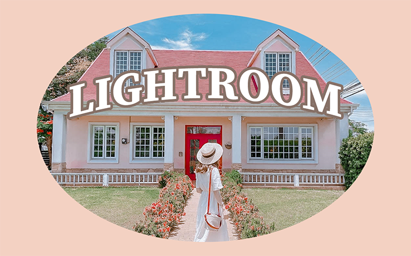
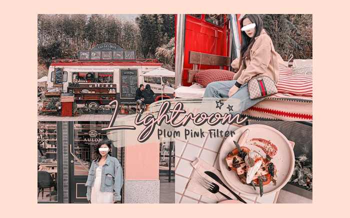
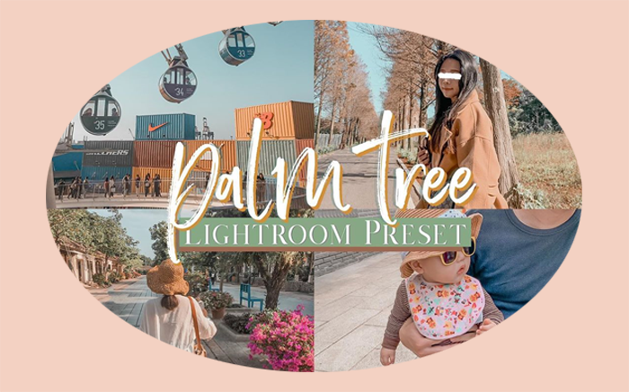
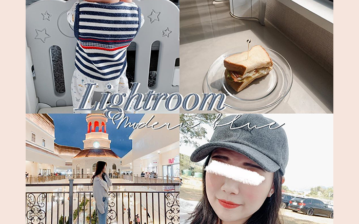
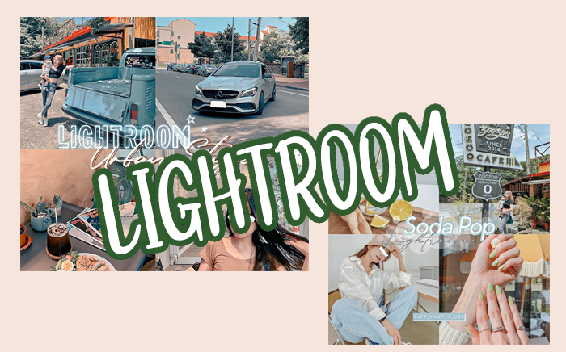

選地區
台北
新北
基隆
桃園
宜蘭
新竹
苗栗
台中
南投
彰化
雲林
嘉義
台南
屏東
花蓮
台東
選風格
美式
歐風
小清新風
渡假風
鄉村風
Black & White
Trap
Neon
所有景點
小雜誌
關於我們
聯絡我們
首頁
小雜誌
濾鏡文章分享
濾鏡文章分享
October 01,2020
1. Follow@app_what_i_use，使用Lightroom濾鏡！

October 01,2020
2. Follow@app_what_i_use，使用適合在戶外的濾鏡

October 01,2020
3. Follow@app_what_i_use，使用粉嫩嫩的濾鏡～

October 01,2020
4. Follow@app_what_i_use，學適合秋天的濾鏡吧！

October 01,2020
5. Follow@app_what_i_use，使用冷色調濾鏡！

October 01,2020
6. Follow@app_what_i_use，使用Lightroom濾鏡！
<
1
2
3
>
↑